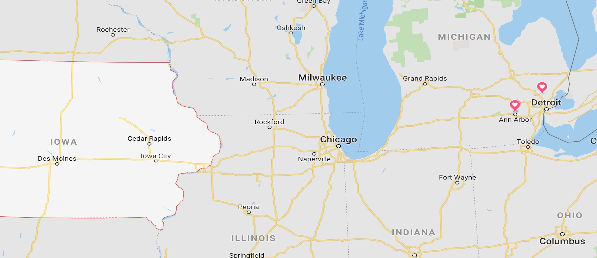

I didn't get into sports until I went to The University of Nebraska for my first year
of college. There I became a Nebraska Cornhuskers fan. Go Big Red!
When I transfered to Iowa State University football grew on me there.
And I now found myself cheering on a second team. Lets go State!


Having been to all of the football games in the 2018 football season at Michigan I
now say, Go Blue!